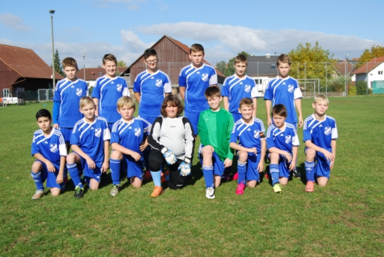

A-Jugend / B-Jugend / D-Jugend / E1-Jugend / E2-Jugend / F-Jugend
B-Juniorinnen 1 / B-Juniorinnen 2 / C-Mädchen / F-Mädchen / Bambinis
B-Juniorinnen - Oberliga
Kader:
Maja Bozicevic, Stella Cusa, Julia Chrzanowski, Victoria Effinger, Sina Geißinger, Annika Holzapfel, Laura Hopf, Christina Kourtoglou, Sophie Köhler, Tia Luz, Franziska Reiser, Maria Schanze, Jemina Schmidt, Lenja Schmidt, Nele Schmidt, Lu Ann Schweizer, Annika Walz, Julia Widmann
Trainer, Co-Trainer und Betreuer:
Rainer Kalbacher - Mobil: 0172/7397083 - Email: rainer.kalbacher(at)t-online.de
Betreuer und Mannschaftsarzt: Holger Walz
Teammanager: Dominik Rakoczy
Trainingstage:
Feld: Montag und Mittwoch 19:00 Uhr - 20:45 Uhr
Mannschaftsfoto B-Juniorinnen:
A-Jugend
Kader:
Alkbash Moataz, Atigan Ismael, Bayezit Ali, Branz Rico, Cakir Samet, Dingler Moritz, Nuzgar Bezhitasvili, Ekiz Anil, Elsässer Tim, Frank Manuel, Heizmann Nico, Heyn Mario, Ibrahim Youssef, Kiefer Kevin, Kiefer Nico, Klinkmüller
Nils, Krauss Micha, Kuczera Denis, Marquardt Robin, Özkoyuncu Ramazan, Sommer Manuel, Teufel Johannes, Teufel Marvin, Wohlschlögl Markus
Trainer:
Frank Weindel - Mobil: 0179/5385998
Trainingstage:
Feld: Montag und Mittwoch 19:00 Uhr - 20:30 Uhr
Mannschaftsfoto A-Jugend:
D1-Jugend
Kader:
Liam Weyherter, Elijah Kiefer, Yunus Altindag, Luis Marquardt, Jannik Pusch, Manuel Flug, Yusuf Salmanli, Fabian Rusko, Rene Pusch, Michelle Heine,
Nick Gutekunst, Henry Sattler, Eric Gutekunst, Eric Seele
Trainer:
Günter Pusch - Tel: 07459/8385 - Email: pusch.guenter(at)t-online.de
Raimund Sattler - Tel: 07459/8923 - Mobil 0152/08722917- Email: Raisatt(at)gmail.com
Vertretung:
Bernd Gutekunst - Tel: 07459/915038 - Email: bgutekunst(at)gmx.de
Trainingstage:
Feld: Montag und Mittwoch 17:00 Uhr - 18:30 Uhr
Mannschaftsfoto D2-Jugend:

Kader: hinten von links nach rechts
Liam Weyherter, Elijah Kiefer, Yunus Altindag, Luis Marquardt, Jannik Pusch, Manuel Flug
vorne von links nach rechts
Yusuf Salmanli, Fabian Rusko, Rene Pusch, Michelle Heine, Nick Gutekunst, Henry Sattler, Eric Gutekunst, Eric Seele
D2-Jugend
Kader:
Akermann Jan, Fuchs Julietta, Huss Malte, Mutter Tobias, Sabolek Marin, Schäffer Maximilian, Zimmermann Samuel, Pfeffer Niklas, Teufel Luca, Sökler Timo, Landwehr Luis, Dizer Michael, Epli Fabian,
Rebmann Jannik, Winz Luca, Yilmaz Emre, Hodolli Shaban
Trainer:
Yasar Yilmaz
Trainingstage:
Feld: Montag und Donnerstag 17:30 Uhr - 19:00 Uhr
Mannschaftsfoto D1-Jugend:
E-Jugend
Kader:
Ahmet Bayezit, Yannick Beu, Tim Bischof, Erik Gutekunst, Levin Hindennach, Franzisko Hinz, Nick Mücke, Deborah Schmid, Cornelius Schulze
Trainer:
Murat Bayezit
- Tel: 07459/915677 - Mobil: 0152/55309851 - Email: bayezit(at)web.de
Kevin Dettling - Mobil: 0176/42983006 - Email kevin.dettling95@web.de
Trainingstage:
Feld: Montag & Mittwoch 17:00 Uhr bis 18:30 Uhr
Halle: Freitag 17:00 Uhr bis 18:30 Uhr
Mannschaftsfoto E-Jugend:
F-Jugend
Kader:
Harbarth Deniz,
Ivanov Slavi,
Bas Dennis,
Hindennach Silas,
Ferl Bela,
Ferl Mylo,
Eroglu Hamza,
Baric Jakob,
Hölzl Yanis,
Ziebarth Daniel,
Ziebart Silas,
Nesch Joel,
Hodolli Erlind,
Weiß Neo
Trainer:
Wolfgang Nesch - Mobil: 0162/5323142 - Email: wolfgang.ne(at)gmx.de
Thorsten Weiss - Mobil: 0172/7240436 - Email: thorsten.weiss1(at)gmx.de
Sebastian Lazar
Trainingstage:
Feld: Mittwoch 17:00 Uhr bis 18:00 Uhr
Halle: Mittwoch 17:00 Uhr bis 18:00 Uhr
Mannschaftsfoto F-Jugend:

B-Juniorinnen 2
Kader:
Akermann Janina, Bernhard Leonie, Bernhard Lara, Brendle, Lea Fabienne, Gsell Jule, Katz Melissa, Klink Linda, Kramer Paula, Kryniak Vera, Kurbjun Michelle, Lanig Lisa, Neff Marie, Nesch Jenny, Präg Karina, Sternad Samara, Stollsteiner Zoe, Zabota Pia
Trainer:
Nina Ehrmann - Mobil: 0152/5412609 - Email: ninaehrmann(at)web.de
Timo Sindlinger - Mobil: 0174/3402844 - Email: timosindlinger(at)gmx.de
Pascal Akermann - Mobil: 0176/92412152 - Email: pascal.akermann(at)web.de
Trainingstage:
Dienstag und Donnerstag 19:00 Uhr - 20:30 Uhr
Mannschaftsfoto B-Juniorinnen 2:
E-Mädchen
Kader:
Michelle Oswald,
Julienne Nesch,
Julia Blank,
Eriola Hodoli,
Lara Ziehbart,
Lena Blank,
Moniqe Heine,
Sima Hasan,
Nele Altay,
Deborah Schmidt,
Mariye Akcan
Trainer:
Carsten Oswald - Mobil: 0179/5450311
- Email: 01795450311(at)o2online.de
Ines Blank - Mobil: 0151/68116625 - Email: ines.blank(at)horb.com
Trainingstage:
Feld: Montag und Mittwoch
17:00 Uhr bis 18:30 Uhr
Mannschaftsfoto E-Mädchen:
Bambinis
Kader:
Auberger Christoph,
Dayanc Bahri Kaan,
Hodolli Erlind,
Eckert Steffen,
Weiß Neo,
Baric Raphael,
Bas Timur,
Naim Sami
Trainer:
Kai Weihing - Mobil: 0173/7288791 - Email: annaweihing(at)gmx.de
Christian Hetzel - Telefon: 07459/921690 - Mobil: 0151/53529747 - Email: hetzel.christian(at)yahoo.de
Trainingstage:
Feld: Mittwoch 16:00 Uhr bis 17:00 Uhr
Halle: Mittwoch 16:00 Uhr bis 17:00 Uhr
Mannschaftsfoto Bambinis:
... Bild folgt ...